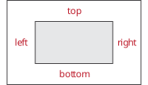
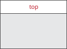
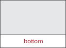
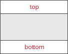
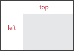
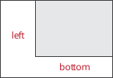
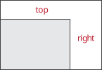

Margins
Overview
Margins add some space around elements. There is a comprehensive list of margin elements in the Elements Library that can be used for various purposes. This section catalogues all the available margin elements.
margin

Adds a margin all around an enclosed element (subject).
Declaration
namespace concepts
{
template <typename T>
concept Rect = requires(T r)
{
{ r.left } -> std::convertible_to<float>; // left margin
{ r.right } -> std::convertible_to<float>; // right margin
{ r.top } -> std::convertible_to<float>; // top margin
{ r.bottom } -> std::convertible_to<float>; // bottom margin
};
}
template <concepts::Rect Rect, concepts::Element Subject>
class margin_element : public proxy<Subject>
{
public:
margin_element(Rect margin_, Subject subject);
...
};
struct static_empty_rect
{
static constexpr int left = 0;
static constexpr int right = 0;
static constexpr int top = 0;
static constexpr int bottom = 0;
};
template <concepts::Element Subject>
margin_element<rect, remove_cvref_t<Subject>>
margin(rect margin_, Subject&& subject);margin_left
Adds a margin to the left of an enclosed element (subject).
margin_right
Adds a margin to the right of an enclosed element (subject).
margin_top

Adds a margin to the top of an enclosed element (subject).
margin_bottom

Adds a margin to the bottom of an enclosed element (subject).
hmargin
(same as margin_left_right)
Adds a margin to the left and right sides of an enclosed element (subject).
Declaration
struct hmargin_rect : static_empty_rect
{
hmargin_rect(float left, float right);
hmargin_rect(float left_right);
float left;
float right;
};
template <concepts::Element Subject>
margin_element<hmargin_rect, remove_cvref_t<Subject>>
hmargin(hmargin_rect margin_, Subject&& subject);
template <concepts::Element Subject>
margin_element<hmargin_rect, remove_cvref_t<Subject>>
hmargin(float left, float right, Subject&& subject);
template <concepts::Element Subject>
margin_element<hmargin_rect, remove_cvref_t<Subject>>
margin_left_right(hmargin_rect margin_, Subject&& subject);
template <concepts::Element Subject>
margin_element<hmargin_rect, remove_cvref_t<Subject>>
margin_left_right(float left, float right, Subject&& subject);Expressions
Factory
| Expression | Semantics |
|---|---|
|
Space is added to the left and right sides of the subject with the given parameters. |
|
Same as |
|
Space is added to the left and right sides of the subject, |
|
Same as |
|
Same as |
|
Same as |
vmargin
(same as margin_top_bottom)

Adds a margin to the top and bottom sides of an enclosed element (subject).
Declaration
struct vmargin_rect : static_empty_rect
{
vmargin_rect(float top, float bottom);
vmargin_rect(float top_bottom);
float top;
float bottom;
};
template <concepts::Element Subject>
margin_element<vmargin_rect, remove_cvref_t<Subject>>
vmargin(vmargin_rect margin_, Subject&& subject);
template <concepts::Element Subject>
margin_element<vmargin_rect, remove_cvref_t<Subject>>
vmargin(float top, float bottom, Subject&& subject);
template <concepts::Element Subject>
margin_element<vmargin_rect, remove_cvref_t<Subject>>
margin_top_bottom(vmargin_rect margin_, Subject&& subject);
template <concepts::Element Subject>
margin_element<vmargin_rect, remove_cvref_t<Subject>>
margin_top_bottom(float top, float bottom, Subject&& subject);Expressions
Factory
| Expression | Semantics |
|---|---|
|
Space is added to the top and bottom sides of the subject with the given parameters. |
|
Same as |
|
Space is added to the top and bottom sides of the subject, |
|
Same as |
|
Same as |
|
Same as |
margin_left_top

Adds a margin to the left and top sides of an enclosed element (subject).
Declaration
struct margin_left_top_rect : static_empty_rect
{
margin_left_top_rect(float left, float top);
float left;
float top;
};
template <concepts::Element Subject>
margin_element<margin_left_top_rect, remove_cvref_t<Subject>>
margin_left_top(margin_left_top_rect margin_, Subject&& subject);
template <concepts::Element Subject>
margin_element<margin_left_top_rect, remove_cvref_t<Subject>>
margin_left_top(float left, float top, Subject&& subject);margin_left_bottom

Adds a margin to the left and bottom sides of an enclosed element (subject).
Declaration
struct margin_left_bottom_rect : static_empty_rect
{
margin_left_bottom_rect(float left, float bottom);
float left;
float bottom;
};
template <concepts::Element Subject>
margin_element<margin_left_bottom_rect, remove_cvref_t<Subject>>
margin_left_bottom(margin_left_bottom_rect margin_, Subject&& subject);
template <concepts::Element Subject>
margin_element<margin_left_bottom_rect, remove_cvref_t<Subject>>
margin_left_bottom(float left, float bottom, Subject&& subject);margin_right_top

Adds a margin to the right and top sides of an enclosed element (subject).
Declaration
struct margin_right_top_rect : static_empty_rect
{
margin_right_top_rect(float right, float top);
float right;
float top;
};
template <concepts::Element Subject>
margin_element<margin_right_top_rect, remove_cvref_t<Subject>>
margin_right_top(margin_right_top_rect margin_, Subject&& subject);
template <concepts::Element Subject>
margin_element<margin_right_top_rect, remove_cvref_t<Subject>>
margin_right_top(float right, float top, Subject&& subject);margin_right_bottom
Adds a margin to the right and bottom sides of an enclosed element (subject).
Declaration
struct margin_right_bottom_rect : static_empty_rect
{
margin_right_bottom_rect(float right, float bottom);
float right;
float bottom;
};
template <concepts::Element Subject>
margin_element<margin_right_bottom_rect, remove_cvref_t<Subject>>
margin_right_bottom(margin_right_bottom_rect margin_, Subject&& subject);
template <concepts::Element Subject>
margin_element<margin_right_bottom_rect, remove_cvref_t<Subject>>
margin_right_bottom(float right, float bottom, Subject&& subject);Example
A row of three boxes: one with a margin of 10 all around, one with 20 on its left and right, and one 30 down from the top:
#include <elements/element/margin.hpp>
#include <elements/element/tile.hpp> // For htile
#include <elements/element/style/misc.hpp> // For box
...
using namespace cycfi::elements;
...
auto row = htile(
margin({10, 10, 10, 10}, box(colors::red)), (1)
hmargin({20, 20}, box(colors::green)), (2)
margin_top(30, box(colors::blue)) (3)
);| 1 | A box with a margin of 10 on each side. |
| 2 | A box with a margin of 20 on its left and right. |
| 3 | A box with a margin of 30 on its top. |
Copyright (c) 2014-2024 Joel de Guzman. All rights reserved. Distributed under the MIT License